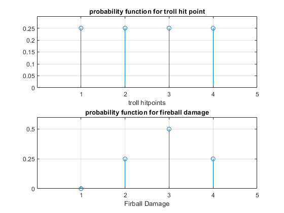
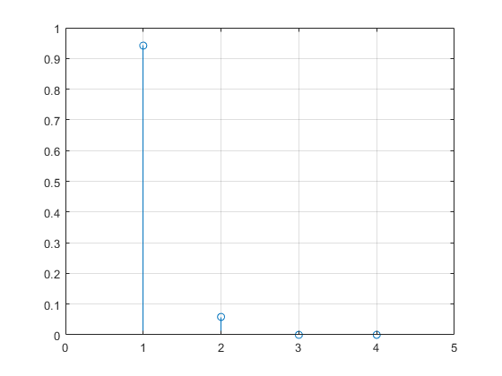
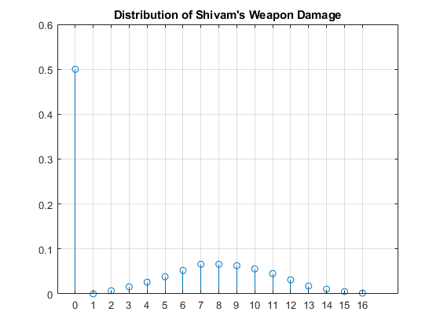

Contents
clear;
close;
Question A
n = 1e7;
prob1t = dicegenpro(18, n, 3, 6, 1, 1);
b)
prob_partb1 = dicegenpro(18, n, 3, 6, 3, 1);
c)
n_c = 1e12;
prob_partc = dicegenpro(18, n, 3, 6, 3, 6);
d)
chance = 0;
stat = 0;
prob_partd = dicegenpro(9, n, 3, 6, 3, 6);
Question 2
troll_hitpoint = dungeondicedist(n, 4, 1);
fireball_damage = dungeondicedist(n, 2, 2);
part b
figure;
subplot(2, 1, 1);
stem(1:1:4, troll_hitpoint./n);
title("probability function for troll hit point");
grid("on");
xlim([0 5]);
xticks([1 2 3 4 5]);
xticklabels([1 2 3 4 5]);
yticks(0:0.05:0.25);
yticklabels(0:0.05:0.25);
xlabel("troll hitpoints");
subplot(2, 1, 2);
stem(1:1:4, fireball_damage./n);
title("probability function for fireball damage");
grid("on");
xlim([0 5]);
xticks([1 2 3 4 5]);
xticklabels([1 2 3 4 5]);
yticks([0 0.25 0.5]);
yticklabels([0 0.25 0.5]);
xlabel("Firball Damage");

part C
attackdie = [2 2];
trolldie = [4 1];
[Q2_partC_percentage, ~] = battlesim(attackdie, trolldie, n, 6, 6);
Part D
[~, dist_d] = battlesim(attackdie, trolldie, n, 6, 5);
totalnumberofhealthytrolls = sum(dist_d);
Q2_partD_average = (dist_d(1,1)+dist_d(2,1)*2)/totalnumberofhealthytrolls;
graph for remaining goblin health after 5 out of 6 goblins are dead
figure;
title("Health of the remaining goblin given that 5 goblins are dead");
stem(1:1:4, dist_d/(sum(totalnumberofhealthytrolls)));
grid("on");
xlim([0 5]);
xticks(0:1:5);
xticklabels(0:1:5);

Part E
shivam_weap_1 = [6, 2];
shivam_weap_2 = [4, 1];
dist_e = shivam(n, shivam_weap_1, shivam_weap_2)/n;
shivam_average = 0;
for i = 2:16
shivam_average = dist_e(i+1, 1)*i + shivam_average;
end
Shiva, weapon distribution
figure;
stem(0:1:16, dist_e);
title("Distribution of Shivam's Weapon Damage");
grid("on");
xlim([-1 18])
xticks(0:1:16);
xticklabels(0:1:16);

Functions
function [probability] = dicegenpro(desiredvalue, number, rolls, sides, trials, stats)
chance = 0;
succ = 0;
for i = 1:number
for z = 1:stats
roll1 = max(sum(randi(sides, trials, rolls), 2));
if(roll1 == desiredvalue)
chance = chance + 1;
end
end
if(chance == stats)
succ = succ + 1;
end
chance = 0;
end
probability = succ/number;
end
function [dist] = dungeondicedist(number, sides, rolls)
dist = zeros(sides*rolls, 1);
for i = 1:number
roll1 = sum(randi(sides, 1, rolls));
dist(roll1, 1) = dist(roll1, 1)+1;
end
end
function [percentage, dist] = battlesim(attackdie, foedie, n, numberoffoe, numberdead)
percentage = 0;
dist = zeros(foedie(1,1)*foedie(1,2), 1);
for i = 1:n
attackdmg = sum(randi(attackdie(1,1), 1, attackdie(1,2)),2);
trolls_hp = sum(randi(foedie(1,1), numberoffoe, foedie(1,2)), 2);
trollrem = sum((trolls_hp-attackdmg)>0);
survivor = max(trolls_hp-attackdmg);
if(trollrem == (numberoffoe - numberdead))
percentage = percentage+1;
if(trollrem > 0)
dist(survivor, 1) = dist(survivor, 1) + 1;
end
end
end
percentage = percentage/n;
end
function [damage_dist] = shivam(n, weapon1, weapon2)
damage_dist = zeros(weapon1(1,1)*weapon1(1,2)+weapon2(1,1)*weapon2(1,2)+1, 1);
dmg = 1;
for i = 1:n
if(randi(20)>=11)
dmg = 1+sum(randi(weapon1(1,1),1, weapon1(1,2)));
if(randi(20)>=11)
dmg = dmg + sum(randi(weapon2(1,1), 1, weapon2(1,2)));
end
end
damage_dist(dmg, 1) = (damage_dist(dmg, 1)) + 1;
dmg = 1;
end
end